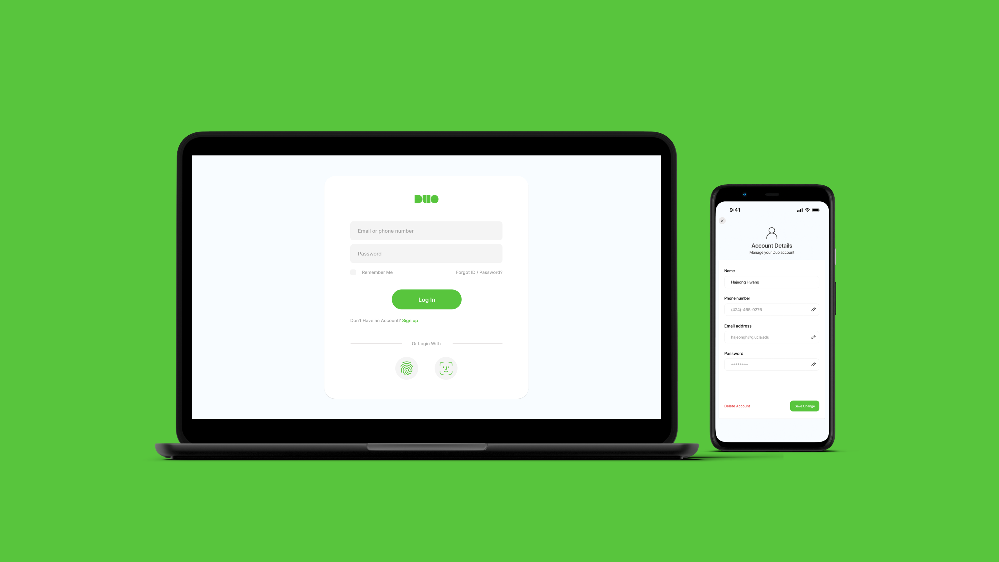

How might we…
How can a redesigned Duo Mobile app deliver a faster, more seamless verification experience?
Solution
Leverage smartphone interaction methods such as Face ID or Fingerprint login.
A mobile app designed for students’ second-step verification

The “Duo Mobile app Re-design project” aimed to enhance the user experience by simplifying and diversifying verification methods on Duo Mobile and through a new web interface. I identified user pain points through user research and testing to validate the improvements, resulting in a more seamless and satisfying user experience.
Duo Mobile is a multifactor authentication app that provides additional security. Many universities use the Duo Mobile app to strengthen security through a second verification. Students verify their account in the Duo Mobile app by approving a push notification during their login process.
Duo Mobile is a multifactor authentication app that provides additional security. Many universities use the Duo Mobile app to strengthen security through a second verification. Students verify their account in the Duo Mobile app by approving a push notification during their login process.
Through my own experience verifying my school account daily, I noticed that the verification process causes frustration and negatively impacts student satisfaction.

After finishing interview, I documented and analyzed the responses to identify insights and key findings. Using affinity diagramming, I organized these insights, focusing on three insights that highlight the user's pain points.

1. Users use Duo Mobile very frequently, but they feel the current user flow is complex, leading to low satisfaction (5.8).
2. Users understand the need for second verification, but they want something quicker and easier.
3.Users want more diverse verification methods beyond phone number verification, as the lack of a clear user flow for changing phone numbers causes inconvenience.

How can a redesigned Duo Mobile app deliver a faster, more seamless verification experience?
Leverage smartphone interaction methods such as Face ID or Fingerprint login.
Create a web version of Duo Mobile to provide a more diverse method of verification.
The sign-up process enables users to include their phone numbers and email addresses on their accounts, which helps users when they face changes in their mobile devices.

Users can change their personal information by logging into their account through their email or phone number. In the new web interface, users can change their account details in settings when they need to change their personal information.

Verifying an account using Face ID is easier and quicker compared to current Duo Mobile verification process.
.gif)

After re-designing using Figma, I conducted a user test with seven interviewees, who were the same person who participated in user interview, asking them to conduct tasks corresponding to the three user flows.
I conducted user testing focusing on those two questions:


1. User satisfaction with the current Duo was 5.8 on a scale of 1-10 which increased to 8.4 after completing tasks with the redesigned version — a 44.8% improvement.
2. The task completion time for mobile app verification process was dropped by 8 seconds, dropping to 7 seconds compared to when using the current Duo Mobile app.
3. The perceived ease of use improved from 3.8 to 4.6, reflecting a 21.1% increase.
1. As an international student who frequently changes phone numbers, it was meaningful for me to understand the pain points of other students in the same situation and solve them through design.
2. The Duo Mobile Re-design project gave me the opportunity to equip the skills needed to implement detailed interfaces and interactions using Figma.
3. Conducting surveys with users taught me the importance of empathizing with users and understanding their pain points before initiating ideation.